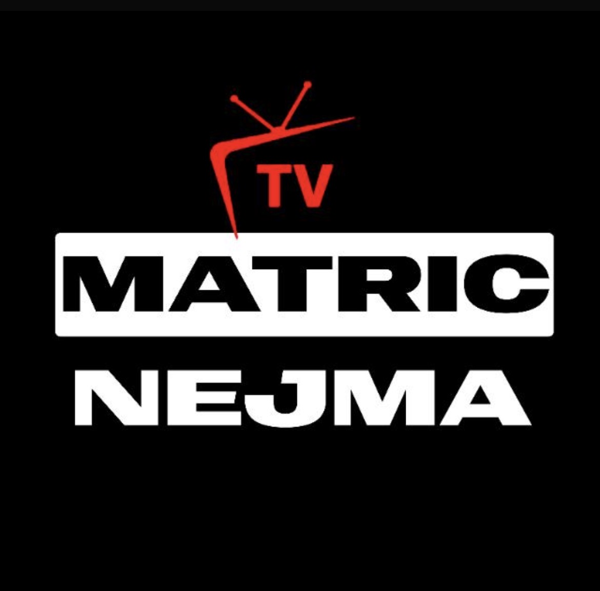

دليل مشاهدة كرة القدم عبر الإنترنت في 2026
دليل تحريري متكامل لمشاهدة كرة القدم عبر الإنترنت: كأس العالم 2026، دوري أبطال أوروبا، تطبيقات الأندرويد، تقنيات 4K والبث القانوني الآمن.
أحدث المقالات والأدلة حول البث المباشر، كرة القدم، تقنية الأندرويد، ونصائح المشاهدة الآمنة والقانونية.

دليل تحريري متكامل لمشاهدة كرة القدم عبر الإنترنت: كأس العالم 2026، دوري أبطال أوروبا، تطبيقات الأندرويد، تقنيات 4K والبث القانوني الآمن.

دليل شامل لمتابعة كأس العالم 2026 بجودة عالية عبر مصادر قانونية، مع شرح متطلبات الإنترنت والأجهزة وتطبيقات البث.

معايير اختيار تطبيق بث آمن ومستقر للأندرويد: الجودة، الخصوصية، البطارية، ودعم مشاهدة كرة القدم على الهاتف والتلفاز.

شرح مبسط لحقوق البث ومخاطر الروابط غير المرخصة، مع نصائح لاختيار خدمات قانونية وآمنة للمباريات.